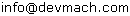

* What's "devmachGauge" ?
devmachGauge is a html5 canvas gadget for drawing simple gauges. It works with Firefox, Chrome and maybe some other browsers ( but not with IE. However, you may try your chance with IE + excanvas ).
* Why?
Because Html5 looks promising and i had free time to play with.
* How to start to use ?
Just
download devmachGauge.js and include this .js file into your page. Then create new "
devmachGauge" object. Now you can use draw function of this object.
Sample code :
<script type="text/javascript" src="devmachGauge.js"></script>
<script type='text/javascript'>
var devmachGauge = new devmachGauge();
devmachGauge.draw('IDofCanvas', 87 ,'#6699CC');
</script>
<canvas id="IDofCanvas" width="100" height="55"></canvas>
Sample output :
* Defined functions
devmachGauge.deg2rad(degree)
Converts given degree to radian. Returs float.
devmachGauge.hex2rgba(hex)
Converts given hex value to css rgaba string with alpha value 1. Returns string.
devmachGauge.percCalc(min,max,val)
devmachGauge works with percentage. If you have minimum, maximum and the current value you don't need to calculate it yourself. Just use this function to calculate it. Returns integer.
devmachGauge.draw(canvasID, newValue, gaugeColor, arrowColor, backgroundColor)
This is where the magic starts. This function draw our gauge on canvas. Returns null.
Parameters ;
CanvasID : ID of a canvas, that we want to draw on.
newValue : The value of the gauge. It should be percentage and should be between 0 and 100.
gaugeColor : The color of the gauge in Hex. Default :
#9ECAE1
arrowColor : The color of arrow/needle in Hex. Default : #000000 ( black )
backgroundColor : Background color in Hex. Default : #FFFFFF ( white )
* FAQ
Why the design of this page sucks ?
Because i have no time to design it. If you have better idea and time just make it with html+css and mail me.
Who the hell are you?
Short Answer: Aydin "/dev/mach" Ulf.
Long Answer : The Wizard of OZ... Or just a person who likes mess with programming, linux, etc...
How can i reach you ?
Just send an e-mail to  ( but if you have a problem with devmachGauge, you are on your own )